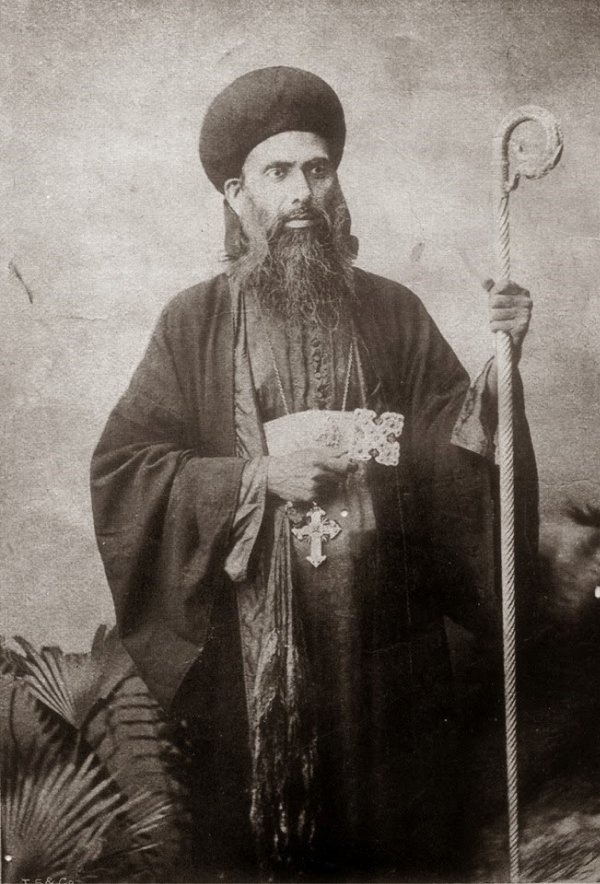

Commemorated TodayGregorios of Parumala
Born on 15 June 1848 to Kochu Mathai and Mariam of the Pallathetta family at Mulanthuruthy, the child known in infancy as Kochaippora was baptised Geevarghese. His mother died when he was two years old, and he was thereafter raised by his eldest sister, Mariam. At the age of ten, already distinguished by his piety and his command of the ancient Syriac chants, he was ordained a reader-deacon; the Malpan who had instructed him succumbed to smallpox, and the boy himself survived the same illness, a recovery his family regarded as an act of providence.
He withdrew for a period to the Vettickal Dayara, adopting an eremitic discipline of fasting and prayer, and was raised to the rank of Ramban there in 1872 by the Malankara Metropolitan, Pulikkottil Joseph Mar Dionysius. Three years later he served as secretary and translator to the visiting Patriarch of Antioch, Peter III, and assisted at the historic Synod of Mulanthuruthy in 1876, the same year in which, at twenty-eight, he was himself consecrated bishop — the youngest of six raised together to the episcopate — and given the see of Niranam under the name Geevarghese Mar Gregorios. His fellow bishops, in deference to his youth, called him Kochu Thirumeni, the Young Bishop.
He established his see at Parumala, in a modest riverside residence known as the Azhippura, and there devoted himself to a threefold labour that would define his episcopate: the administration of his diocese, the formation of the young deacons who gathered under him for instruction, and an unremitting missionary endeavour extended equally to the poor and the marginalised. At his instigation, schools were established across Malankara — at Kunnamkulam, Mulanthuruthy, Niranam, Thumpamon, and Thiruvalla — open, by his express wish, without regard to religion or gender. In 1895 he undertook a pilgrimage to Jerusalem and, upon his return, published Malayalam's first printed travelogue, an account later rendered into English a century afterward.
Among the deacons formed under him at Parumala were three who would themselves shape the Church for decades to come: Vattasseril Geevarghese, later Dionysius VI; Kuttikattu Paulose, later Mar Athanasios of Aluva; and Kallasseril Geevarghese, later raised as Catholicos Baselios Geevarghese II. A chronic illness overtook him in his final years, and on 2 November 1902 he died at Parumala, mourned by an assembly unprecedented in the parish's history. Within decades his tomb had become the foremost site of pilgrimage in the Malankara Church, and the testimonies of the faithful to his intercession continued without interruption. On the forty-fifth anniversary of his death, 2 November 1947, Catholicos Baselios Geevarghese II — once his own deacon — declared him a saint of the Malankara Orthodox Syrian Church. Forty years later, on 20 October 1987, His Holiness Ignatius Zakka I, Patriarch of Antioch, formally confirmed his sainthood for the wider Syriac Orthodox communion.
Parish: St. Thomas Cathedral, Mulanthuruthy
“…that the land would yield a hundred, sixty, and thirtyfold harvest.”
Remembered blessing over the fields near Mazhuvannoor